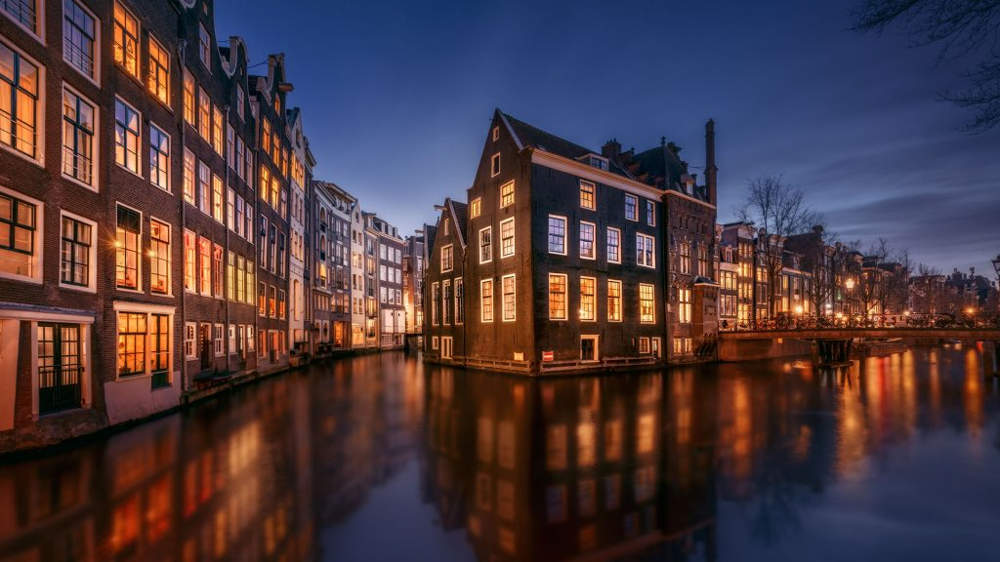

Index
The Netherlands, located in northwestern Europe, is a country known for its ability to adapt to its environment, its rich history, and its strong cultural identity. A large part of its territory lies below sea level, which has led the Dutch people to develop advanced water management systems over the centuries. This close relationship with water has played a key role in shaping the country’s society, economy, and way of life.


Throughout history, the Netherlands has had an important role in Europe and the world, particularly during the early modern period, when it became a major center of trade, art, and cultural exchange. This historical background has influenced a culture characterized by openness, tolerance, and respect for diversity, values that coexist with a modern and innovative mindset.
Dutch gastronomy reflects both the country’s history and its natural conditions, with simple yet traditional dishes that are part of everyday life and cultural celebrations. Sports also hold an important place in Dutch society, ranging from widely practiced team sports to activities closely connected to the country’s climate and geography. In addition, the Netherlands is home to many iconic landmarks that represent its historical heritage, artistic legacy, and unique landscapes, making it a popular destination for visitors from around the world